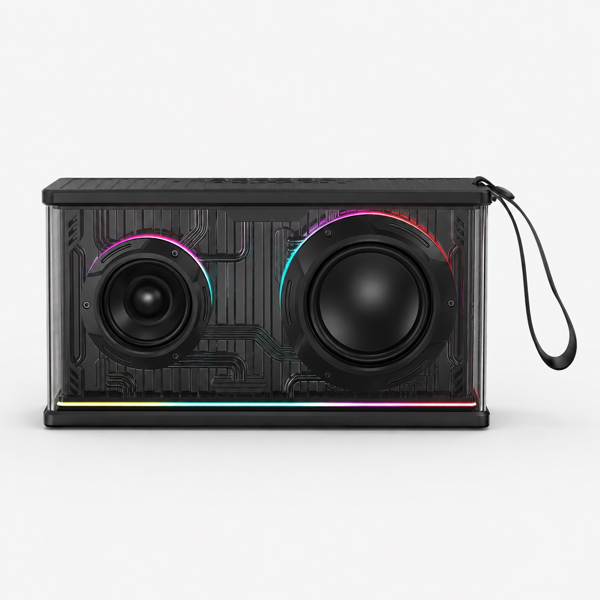
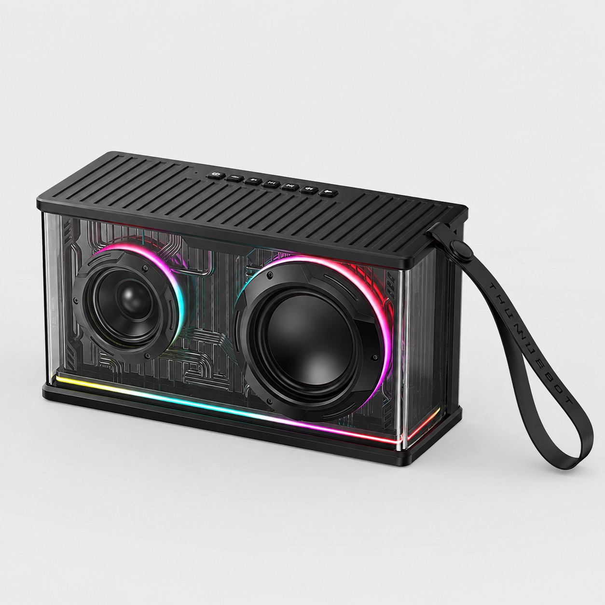
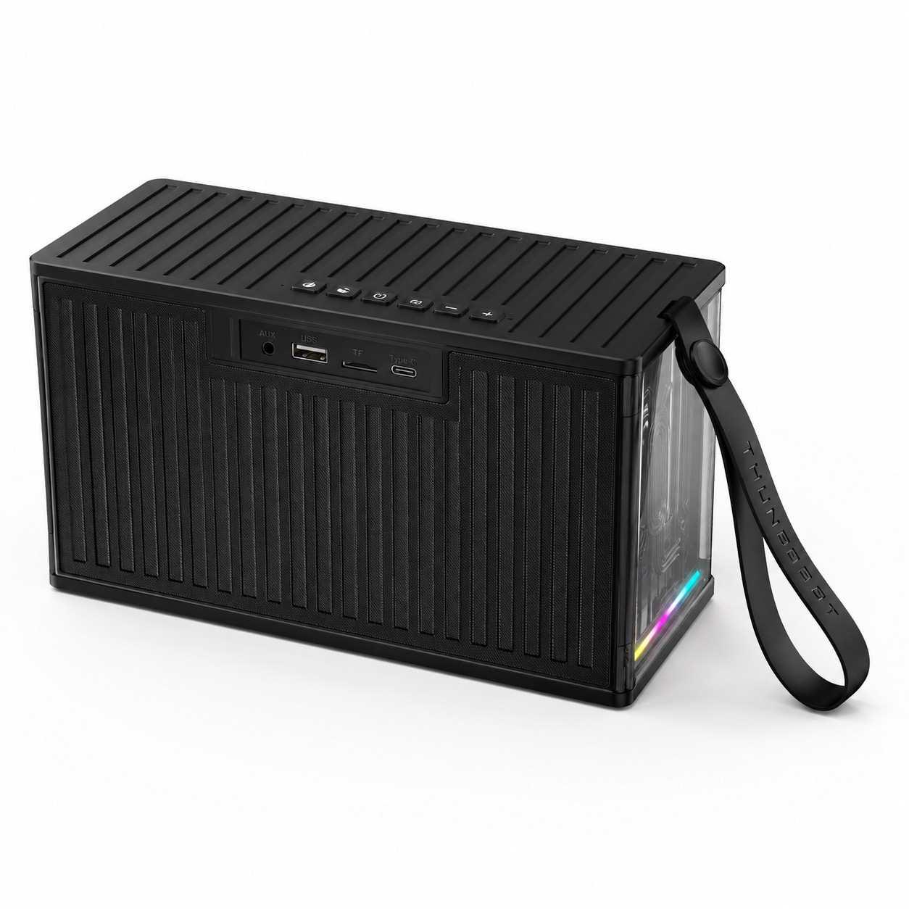
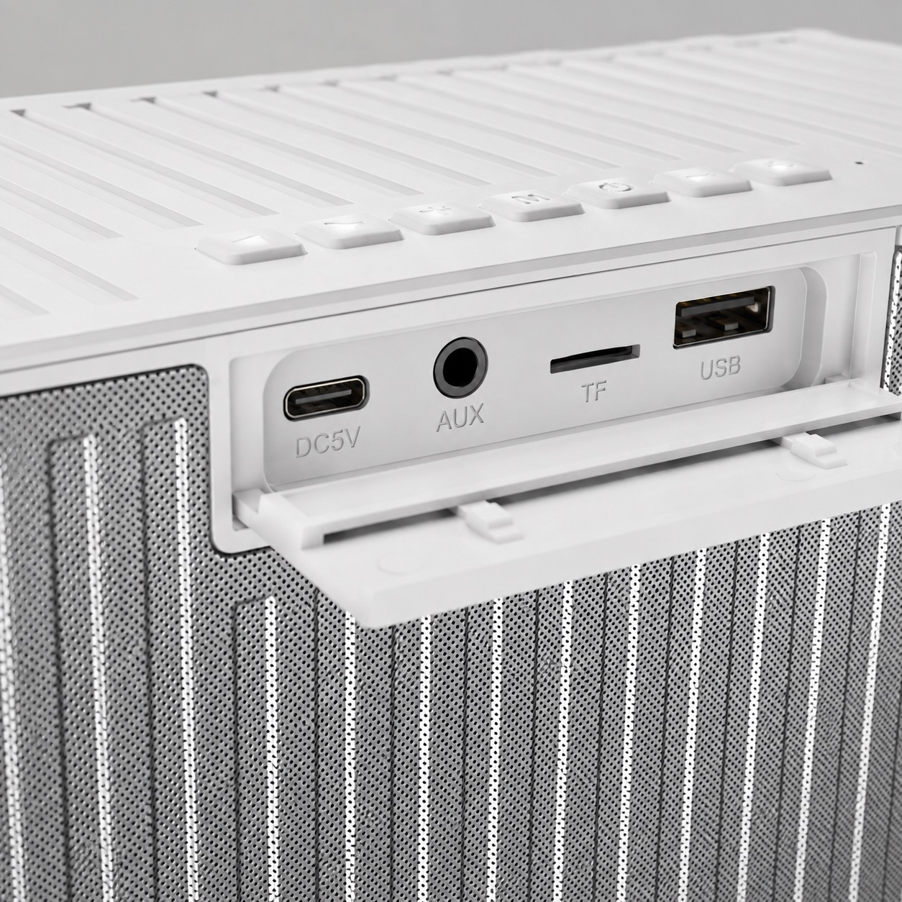
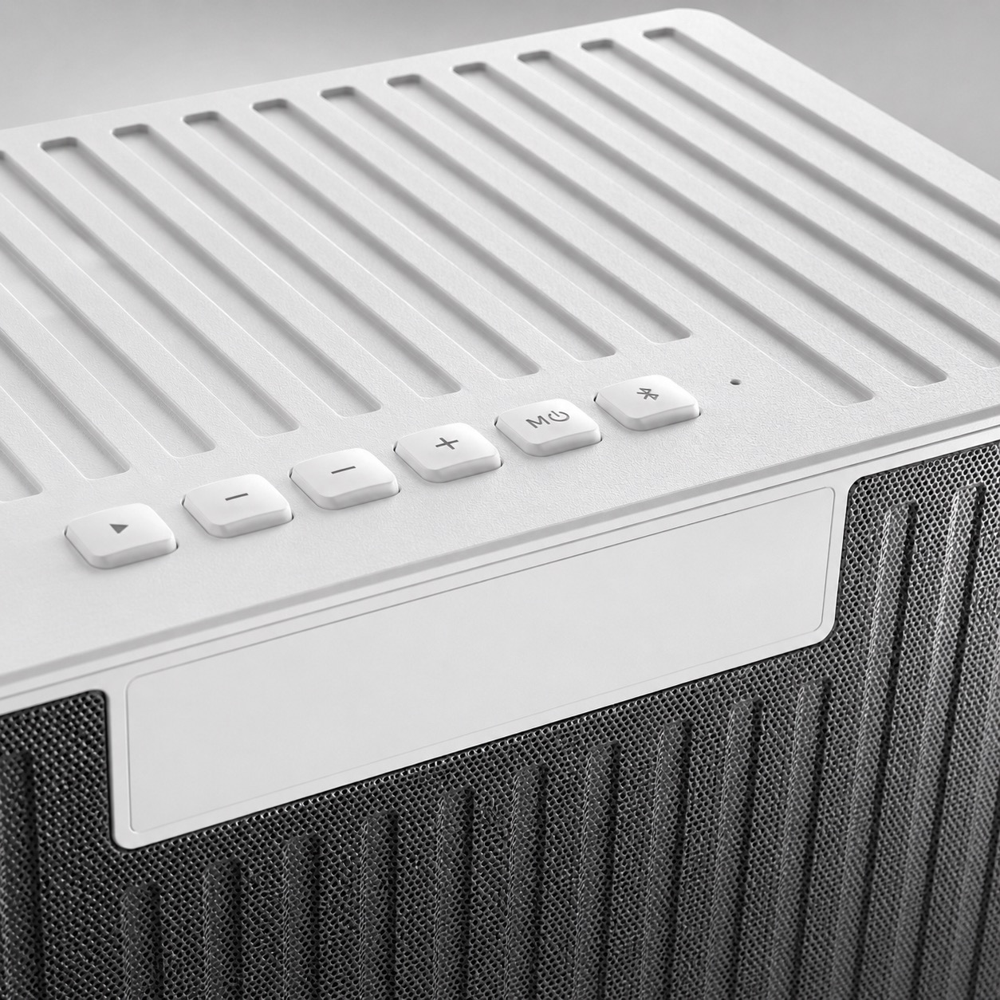
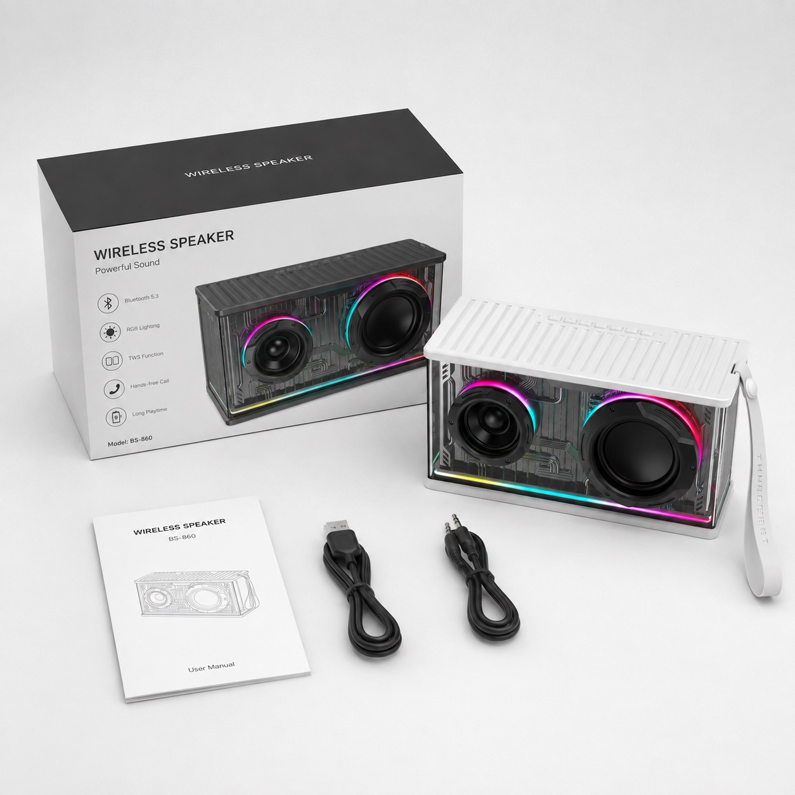
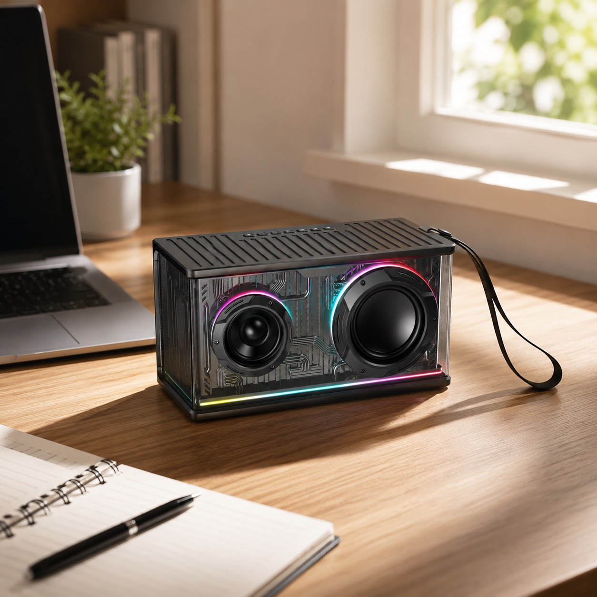

Front RGB speaker layout
Review the transparent cabinet, large woofer position, tweeter position, RGB light strip and carry strap direction.

Archived product route
TALRIVO is currently focusing public product content on gaming headsets and related audio sample review. For current inquiries, start from the gaming headset collection, sample request page or contact form.
BH-101 Bluetooth speaker
BH-101 is presented as a compact RGB Bluetooth speaker direction for sample discussion. The supplied specification reference lists Bluetooth 5.4 dual mode, ATS2853P2 chipset, 21700 battery cells x 2, 7.4V 5000mAh battery profile, TWS support and USB/TF local playback.

Listed specifications
These details come from the supplied BH-101 specification image. Confirm the final sample version before using exact claims in packaging, retail listings or customer-facing documents.
| Bluetooth | Bluetooth 5.4 dual mode |
|---|---|
| Chipset | ATS2853P2 |
| Battery | 21700 battery cells x 2; 7.4V 5000mAh listed |
| Product size | 230.03 x 124.30 x 109.74 mm |
| Speaker structure | 2 tweeters + 1 woofer + passive radiator bass direction |
| Playback and input modes | Bluetooth, AUX, USB and TF; USB/TF local playback support |
| Pairing | TWS support listed |
| Visual direction | RGB design with transparent cabinet styling and carry strap |
Product image evidence
Use these images to discuss product appearance, controls, input ports, strap construction, RGB style, packaging direction and lifestyle photo needs before approving sample content.

Review the transparent cabinet, large woofer position, tweeter position, RGB light strip and carry strap direction.

Use this angle to check control layout and visible ports before discussing product photos, manual language and sample review.

Confirm USB, TF, AUX and charging-port details against the final sample version before writing listing copy.

Review the button symbols, tactile layout, surface grooves and color direction for buyer sample notes.

Use the accessory set as a discussion reference. Final box artwork, model text, cable set and manual language should be confirmed for the selected project.

Desk and home-use images can support buyer presentations, online listings and social content without relying only on white-background renders.
Sample checklist
The first sample review should confirm the physical product, listed functions and packaging path before logo, artwork or commercial quotation details are finalized.
Check pairing flow, reconnect behavior and TWS pairing on the actual sample before publishing any connection details.
Test Bluetooth, AUX, USB and TF behavior, then record which modes need to appear in the manual or product listing.
Use the listed 7.4V 5000mAh battery profile as a starting point, then confirm final sample labeling, charging port and usage claims.
Review lighting effect, transparent cabinet appearance, color direction and whether the style fits the target retail channel.
Confirm cable set, user manual language, inner tray, box artwork, barcode area and any market-specific packaging needs.
Send destination market, sales channel, color direction, branding scope, quantity range, sample timing and document questions.
Use cases
FAQ
BH-101 is a dual-mode Bluetooth 5.4 portable speaker direction with ATS2853P2 chipset, RGB styling, TWS support, USB/TF playback and a listed 7.4V 5000mAh battery profile.
Buyers should check the selected sample version, Bluetooth behavior, TWS pairing, USB/TF playback, AUX input, port cover, RGB lighting, battery information, accessory set, packaging direction and target-market document questions.
Yes. Buyers can review BH-101 after confirming the base model, color direction, logo area, packaging needs, manual language, accessory set and sample timing.
Share your target market, sales channel, preferred color direction, sample timing, branding needs, packaging questions and the product details you need confirmed before quotation.